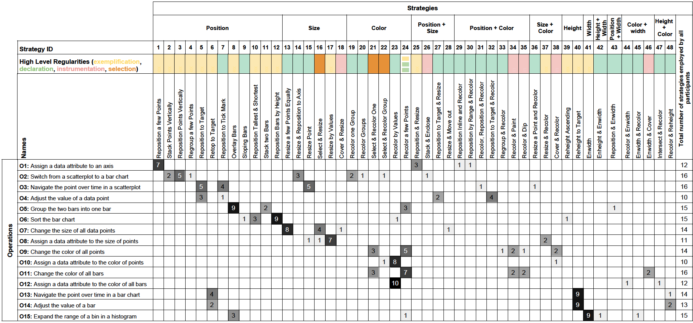

We investigate direct manipulation of graphical encodings as a method for interacting with visualizations. There is an increasing interest in developing visualization tools that enable users to perform operations by directly manipulating graphical encodings rather than external widgets such as checkboxes and sliders. Designers of such tools must decide which direct manipulation operations should be supported, and identify how each operation can be invoked. However, we lack empirical guidelines for how people convey their intended operations using direct manipulation of graphical encodings. We address this issue by conducting a qualitative study that examines how participants perform 15 operations using direct manipulation of standard graphical encodings. From this study, we 1) identify a list of strategies people employ to perform each operation, 2) observe commonalities in strategies across operations, and 3) derive implications to help designers leverage direct manipulation of graphical encoding as a method for user interaction.
We developed an interactive data visualization using JavaScript. The visualization modules are built using the D3 toolkit. The tool we implemented has an Upload and a Reset button. The Upload button enables the interviewer to upload any of the visualizations created using the datasets used in our study. The Reset button allows the interviewer to reset the visualization after a participant has interacted with the visualization. We added interactivity to the encodings used in visualizations. For instance, users could change the position, color, width, and height of the bars in a bar chart. Or, they could change the size, position, and color of circles in the scatterplot. The tool shows one visualization at a time. Participants can perform each operation by directly manipulating the encodings in the visualization. For example, the interviewer uploads a bar chart visualization in our tool and asks a participant to perform an operation. The participant can manipulate different operations to convey her intention. The tool only enables participants to manipulate the encodings and does not recompute the visualization (similar to a drawing interface like Adobe Illustrator). Enabling the participants to convey their actions without the system reacting to those actions allowed us to observe participants' unrevised behavior, and drive system design to accommodate it.
In total participants employed 203 strategies to perform 15 different operations. We first sketched out each participant's strategy and grouped these sketches into 48 independent categories based on their similarities. Each sketch belongs only to one of the identified categories and all categories are exclusive. We then independently named each category of strategies (e.g.,``Stack points vertically'') and counted the total number of sketches ineach category. The figure below shows in rows the 15 operations participants performed during the study, and in columns the 48 strategies we identified. Each cell shows the number of times participants used the strategy in column to perform the operation in row. The higher the value in a cell, the darker the background of the cell. Strategies are grouped based on the main encoding(s) involved in employing that strategy (second row in the table).
